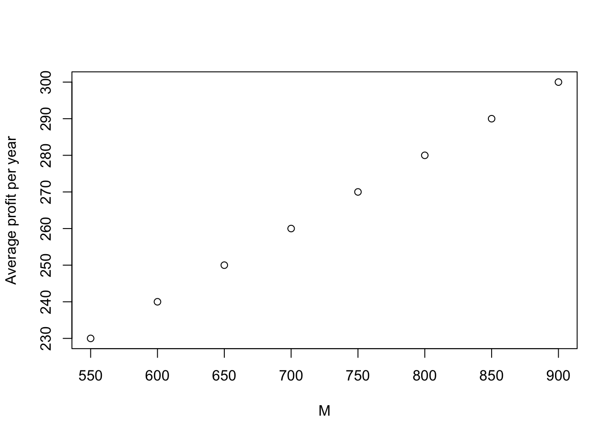

Chapter 7 Project 2021 Risk Theory
Instructions
Form a group of 2 members.
You will receive R and Excel files for the project. Use R to generate an array of independent values \(\{\{Z_{i \,j} \}_{j=1}^5 \}_{i=1}^{1000}\), each from a \(U(0,1)\) distribution (details are given below in the question section). Remember to set the argument to set.seed(xxxx) where the argument, xxxx, of the set.seed function is the final four digits of the lower student identification number, e.g. if students’ I.D. are 6105389 and 6105395, then use set.seed(5389).
Then use your preferred software, EXCEL, R or other reasonable software to do the subsequent computation. In case that you choose to use EXCEL, you will need to copy and paste the array \(\{\{Z_{i \,j} \}_{j=1}^5 \}_{i=1}^{1000}\) generated from R into EXCEL by hands.
Each group submission consists of (1) a report in PDF format, together with print-outs of your calculations (also in PDF) and (2) an R or EXCEL file (one file only) with answers to questions with required numerical answers (i.e. excluding questions asking for comments).
The report should not exceed four A4 pages in length (not including the print-outs of the calculations). The report, R (or EXCEL) file names should be in the format project6105389-6105395. Submit the group report and R (or Excel) files in Canvas to the student account with the lower student ID.
Failure to personalize your project with set.seed will result in a project mark of 0.
Columns or variable names in your print-out should be clearly labeled.
When using EXCEL, R or any other reasonable software, to simulate values of the surplus using a translated gamma approximation, use the exact value of the parameters \(\alpha, \beta\) and \(k\) held by the software, not the rounded values presented in your report.
For example, suppose you are using EXCEL to simulate \(S(1)\), that a \(U(0,1)\) value is held in cell A1 and your calculated values of \(\alpha, \beta\) and \(k\) are in cells A2, A3 and A4, respectively. Suppose further that the values of these parameters, to 5 decimal places, are 1.12345, 0.12345 and $-$123.12345. Note that EXCEL will be holding these values to a far greater degree of accuracy. To simulate a value of \(S(1)\), you should use the command
= GAMMAINV(A1,A2,1/A3) + A4
not the command:
= GAMMAINV(A1,1.12345,1/0.12345) \(-\) 123.12345.
Questions
Suppose the aggregate claims process for a portfolio \(\{ S(t) \}_{t \ge 0}\) is a compound Poisson process with Poisson parameter 10 and individual claim amounts \(X\) have the following distribution
| \(x\) | 10 | 100 | 500 | 1000 |
|---|---|---|---|---|
| \(\Pr(X = x)\) | 0.5 | 0.3 | 0.15 | 0.05 |
In the simulations below, the seed number has been set to be set.seed(5377).
- Calculate the first three non-central moments of \(X\), i.e. \(\text{E}[X]\), \(\text{E}[X^2]\) and \(\text{E}[X^3]\).
\[ \begin{aligned} \text{E}[X] &= 10 \cdot 0.5 + 100 \cdot 0.3 + 500 \cdot 0.15 + 1000 \cdot 0.05 = 160 \\ \text{E}[X^2] &= 100 \cdot 0.5 + 10^{4} \cdot 0.3 + 2.5\times 10^{5} \cdot 0.15 + 10^{6} \cdot 0.05 = 9.055\times 10^{4} \\ \text{E}[X^3] &= 1000 \cdot 0.5 + 10^{6} \cdot 0.3 + 1.25\times 10^{8} \cdot 0.15 + 10^{9} \cdot 0.05 = 6.90505\times 10^{7}. \\ \end{aligned} \]
- Calculate the mean, variance and coefficient of skewness of the aggregate claims at time \(t = 1\), i.e. \(\text{E}[S(1)]\), \(\text{Var}[S(1)]\) and \(\text{Sk}[S(1)]\).
\[ \begin{aligned} \text{E}[S(1)] &= \lambda \text{E}[X] = 1600 \\ \text{Var}[S(1)] &= \lambda \text{E}[X^2] = 9.055\times 10^{5} \\ \text{Sk}[S(1)] &= \frac{\lambda \text{E}[X^3]}{(\text{Var}[S(1)])^{3/2}} = 0.801372. \\ \end{aligned} \]
- Calculate \(\text{E}[S(5)]\) and \(\text{Var}[S(5)]\).
\[ \begin{aligned} \text{E}[S(5)] &= 5 \lambda \text{E}[X] = 8000 \\ \text{Var}[S(5)] &= 5 \lambda \text{E}[X^2] = 4.5275\times 10^{6}. \\ \end{aligned} \]
Assume that \(S(1)\) can be approximated by \(Y + k\) where \(Y \sim \mathcal{G}(\alpha,\beta)\) and \(k\) is a constant.
- Calculate \(\alpha\), \(\beta\) and \(k\).
\[ \begin{aligned} \alpha &= \left(\frac{2}{\text{Sk}[S(1)]}\right)^2 = 6.228618 \\ \beta &= \sqrt{\frac{\alpha}{\text{Var}[S(1)]}} = 0.0026227 \\ k &= \text{E}[S(1)] - \frac{\alpha}{\beta} = -774.8712899. \\ \end{aligned} \]
- Comment on the values obtained in 4.
The negativity of \(k\) implies that negative aggregate claims can occur in the approximation. This is an unrealistic effect of which we must be aware in what follows.
The insurer sets the annual premium to be charged for this portfolio using the expected value principle (EVP) with the relative security loading \(\theta = 0.2\) so that the annual premium before reinsurance is \(c\), where \[c = ( 1 + \theta)\text{E}[S(1)].\]
- Calculate the premium rate \(c\). \[c = ( 1 + \theta)\text{E}[S(1)] =( 1 + \theta)\lambda \text{E}[X] = 1920 .\]
Let \(U(n)\) denote the insurer’s surplus at time \(n\), \(n = 1,2, \ldots, 5\) so that \[U(n) = u + n c - S(n),\] where \(u\) is the insurer’s initial surplus.
Use R to generate an array of independent values \(\{\{Z_{i \,j} \}_{j=1}^5 \}_{i=1}^{1000}\), each from a \(U(0,1)\) distribution. Remember to set the argument to set.seed(xxxx) where the argument, xxxx, of the set.seed function is the final four digits of your student identification number, e.g. if your student I.D. is 6105389, then use set.seed(5389).
Then use your preferred software, EXCEL, R or other reasonable software to do the subsequent computation. In case that you choose to use EXCEL, you will need to copy and paste the array \(\{\{Z_{i \,j} \}_{j=1}^5 \}_{i=1}^{1000}\) generated from R into EXCEL by hands.
Let \(\hat{U_i}(5), \, i = 1,2,\ldots, 1000\), denote the simulated surplus after five years calculated using the five values \(Z_{i \,1}, Z_{i \,2}, \ldots, Z_{i \,5}\) and the translated gamma approximations to \(S(1), S(2) - S(1), \ldots, S(5) - S(4)\) as discussed in the lecture.
- Calculate \(E[U(5)]\) and \(\text{Var}[U(5)]\), given that \(u = 3500\).
\[ \begin{aligned} \text{E}[U(5)] &= \text{E}[3500 + 5c - S(5)] = 5100 \\ \text{Var}[U(5)] &= \text{Var}[3500 + 5c - S(5)] = \text{Var}[S(5)] = 4.5275\times 10^{6} \\ \end{aligned} \]
- Calculate \(\sum_{i=1}^{1000} \hat{U_i}(5)/1000\), given that \(u = 3500\).
We have \[\sum_{i=1}^{1000} \hat{U_i}(5)/1000 = 5171.9715293\]
- Comment on your answers to questions 7 and 8.
The value in 8 is an estimator for E[U(5)] based on an approximation by simulation and an approximation by the translated gamma distribution.
The estimation error is relatively small, but not completely negligible, so our simulation results in this coursework must be interpreted with care.
- Estimate the ruin probabilities \(\psi_1(3500,5)\) and \(\psi_1(4000,5)\) from the simulated surplus paths \((\hat{U_i}(n))_{i = 1,2,\ldots 1000, \, n = 1,2, \ldots, 5}\).
In the 1000 simulations, we observe 17 and 11 times a ruin.
\[ \begin{aligned} \psi_1(3500,5) &= \frac{17}{1000} = 0.017 \\ \psi_1(4000,5) &= \frac{11}{1000} = 0.011. \end{aligned} \]
- Comment on your answers to questions 10, taking into consideration your answer to question 7.
As expected from the theory, the probability of ruin is lower in the second case, where the initial capital is higher.
The direct insurer is considering entering into an excess of loss reinsurance contract with retention \(900\). The reinsurer uses a relative security loading \(\theta_R\) to calculate its reinsurance premium.
After taking account of reinsurance, the subscript \(I\), for example \(X_I\), \(S_I(1)\), denotes the relevant quantities for the insurer. The probability of ruin for the insurer, checking for ruin at the end of each year for 5 years and given initial surplus 3500 is \(\psi_{I,1}(3500,5)\).
- Calculate the first three non-central moments of \(X\), i.e. \(\text{E}[X_I]\), \(\text{E}[X_I^2]\) and \(\text{E}[X_I^3]\).
The distribution of claim amounts paid by the insurer, \(F_{X_I}(x)\) is given by
| \(x\) | 10 | 100 | 500 | 900 |
|---|---|---|---|---|
| \(\Pr(X_I = x)\) | 0.5 | 0.3 | 0.15 | 0.05 |
where \(X_I = \min(X,M)\).
Hence,
\[ \begin{aligned} \text{E}[X_I] &= 10 \cdot 0.5 + 100 \cdot 0.3 + 500 \cdot 0.15 + 900 \cdot 0.05 = 155 \\ \text{E}[X_I^2] &= 100 \cdot 0.5 + 10^{4} \cdot 0.3 + 2.5\times 10^{5} \cdot 0.15 + 8.1\times 10^{5} \cdot 0.05 = 8.105\times 10^{4} \\ \text{E}[X_I^3] &= 1000 \cdot 0.5 + 10^{6} \cdot 0.3 + 1.25\times 10^{8} \cdot 0.15 + 7.29\times 10^{8} \cdot 0.05 = 5.55005\times 10^{7}. \\ \end{aligned} \]
- Calculate the mean, variance and coefficient of skewness of the aggregate claims \(S_I(1)\) at time \(t = 1\), i.e. \(\text{E}[S_I(1)]\), \(\text{Var}[S_I(1)]\) and \(\text{Sk}[S_I(1)]\).
\[ \begin{aligned} \text{E}[S_I(1)] &= \lambda \text{E}[X_I] = 1550 \\ \text{Var}[S_I(1)] &= \lambda \text{E}[X_I^2] = 8.105\times 10^{5} \\ \text{Sk}[S_I(1)] &= \frac{\lambda \text{E}[X_I^3]}{(\text{Var}[S_I(1)])^{3/2}} = 0.7606193. \\ \end{aligned} \]
- Assume that \(S_I(1)\) can be approximated by \(Y_I + k_I\) where \(Y_I \sim \mathcal{G}(\alpha_I,\beta_I)\) and \(k_I\) is a constant. Calculate \(\alpha_I\), \(\beta_I\) and \(k_I\).
\[ \begin{aligned} \alpha_I &= \left(\frac{2}{\text{Sk}[S_I(1)]}\right)^2 = 6.9139344 \\ \beta_I &= \sqrt{\frac{\alpha_I}{\text{Var}[S_I(1)]}} = 0.0029207 \\ k_I &= \text{E}[S_I(1)] - \frac{\alpha_I}{\beta_I} = -817.2228178. \\ \end{aligned} \]
Calculate \(E[U_I(5)]\) and \(\text{Var}[U_I(5)]\), given that \(u = 3500\) and assuming:
\(\theta_R = 3\theta\).
\(\theta_R = 2\theta\).
\(\theta_R = \theta\).
The insurer’s surplus process can be calculated from \[ U_I(t) = u + (c - c_r)t - S_I(t),\] where \(c_R = (1 + \theta_R)\text{E}[S - S_I]\) is the reinsurance premium rate.
For \(\theta_R = 3\theta\), \[ \begin{aligned} \text{E}[U_I(5)] &= \text{E}[U(0) + 5(c - c_R) - S_I(5)] = 4950 \\ \text{Var}[U_I(5)] &= \text{Var}[U(0) + 5(c - c_R) - S_I(5)] = \text{Var}[S_I(5)] = 4.0525\times 10^{6}. \\ \end{aligned} \]
For \(\theta_R = 2\theta\), \[ \begin{aligned} \text{E}[U_I(5)] &=5000 \\ \text{Var}[U_I(5)] &= 4.0525\times 10^{6}. \\ \end{aligned} \]
For \(\theta_R = 1\theta\), \[ \begin{aligned} \text{E}[U_I(5)] &=5050 \\ \text{Var}[U_I(5)] &= 4.0525\times 10^{6}. \\ \end{aligned} \]
It should be emphasised that the value of \(\text{Var}[U_I(5)]\) is not affected by the (net) premium income and so is not affected by the values of \(\theta\) or \(\theta_R\).
Using \(\{\{Z_{i \,j} \}_{j=1}^5 \}_{i=1}^{1000}\) and the translated gamma approximation, estimate \(\psi_{I,1}(3500,5)\) assuming:
\(\theta_R = 3\theta\).
\(\theta_R = 2\theta\).
\(\theta_R = \theta\).
- For \(\theta_R = 3\theta\), \(\theta_R = 2\theta\) and \(\theta_R = 1\theta\), in the 1000 simulations, we observe 14, 13 and 13 times a ruin, respectively.
\[ \begin{aligned} \psi_1(3500,5) &= \begin{cases} 0.014, & \text{ if } \theta_R = 3\theta \\ 0.013, & \text{ if } \theta_R = 2\theta \\ 0.013, & \text{ if } \theta_R = 1 \theta. \end{cases} \end{aligned} \]
0.014, 0.013 0.013,
Comment on your answers to questions 10 and 16, taking into consideration the answers to question 15.
The excess of loss reinsurance has reduced the amount of the largest possible claim. This makes the portfolio much safer for the insurer. However, the standard deviation of the surplus at the end of 5 years has been reduced by only a factor of about 1.0569823.
This reduced risk is reflected in the ruin probabilities, which are smaller than the value in question 10.
The more expensive the reinsurance (= the higher the value of \(\theta_R\)), the lower the insurer’s net premium income and the higher the (estimated) ruin probability.
This reduced risk is “paid for” by the insurer’s expected surplus. This has fallen substantially (from 5100 to 4950 (\(\theta_R = 3 \theta\)) and to 5050 (\(\theta_R = \theta\))). Clearly, the insurer would prefer \(\theta_R = \theta\), as this implies the lowest cost of reinsurance and hence the highest expected net surplus and the lowest probability of ruin.
Suppose that \(\theta_R = 2\theta\). Estimate the probability of ruin \(\psi_{I,1}(3500,5)\) for the reinsurer, given the retention limit is \(M = 550, 600, 650, \ldots, 900\). Identify the largest \(M \in \{550, 600, 650, \ldots, 900 \}\) such that the corresponding estimated probability of ruin is not greater than 1%.
The estimates the probability of ruin \(\psi_{I,1}(3500,5)\) for the reinsurer, given the retention limit is \(M = 550, 600, 650, \ldots, 900\) are 0.01, 0.01, 0.01, 0.011, 0.011, 0.011, 0.011, 0.013. Hence, the largest \(M \in \{550, 600, 650, \ldots, 900 \}\) such that the corresponding estimated probability of ruin is not greater than 1% is \(M = 650\). The results are also illustrated in the figure below.
- Comment on your answers to questions 18.
It is possible to get the estimated probability of ruin below 1% even in the case that the reinsurance is “expensive”, i.e. the reinsurance risk loading is higher than the risk loading the insurer charges on the original insurance contracts.
While before reinsurance the average profit per year was \(c - \text{E}[S(1)] = ((1+\theta)−1) \times \text{E}[S(1)] = 320\). To run a sustainable business in the long run, the annual cost of capital should not be higher than the average annual profit, i.e. not higher than \[ \frac{320}{3500} = 9.1428571\%.\] This return looks large enough to attract investors.
With the results in 18, adding excess of loss reinsurance with \(\theta_R = 2\theta\) and the retention limit \(M = 650\) reduces the average profit to \[ c - c_R - \text{E}[S_I(1)] = (1+\theta) \text{E}[S(1)] - (1+\theta_R) ( \text{E}[S(1)] - \text{E}[S_I(1)]) - \text{E}[S_I(1)]) = 250.\]
The insurer can still make a profit provided the surplus will drift to \(\infty\), but ruin could still occur. The rate at which premium income comes in is greater than the rate at which claims are paid out and reinsurance premium charged.
It should be noted that the average profit per year after the excess of loss reinsurance with \(\theta_R = 2\theta\) is an increasing function of \(M\) as shown in the figure below:
